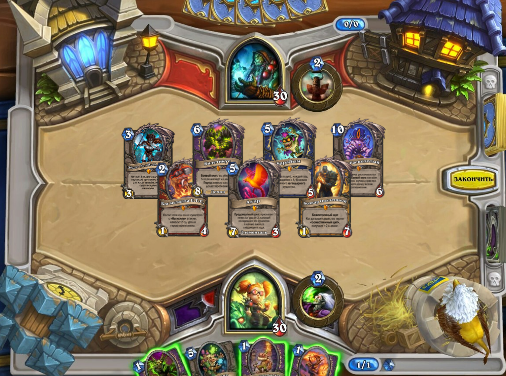

|
Материал
|
Описание
|
Примеры значений
|
|
|
absolute
Указывает, что элемент абсолютно позиционирован, при этом другие элементы отображаются на веб-странице
словно абсолютно позиционированного элемента и нет. Положение элемента задается свойствами left, top,
right и bottom, также на положение влияет значение свойства position родительского элемента. Так, если
у родителя значение position установлено как static или родителя нет, то отсчет координат ведется от
края окна браузера. Если у родителя значение position задано как fixed, relative или absolute, то
отсчет координат ведется от края родительского элемента.
fixed
По своему действию это значение близко к absolute, но в отличие от него привязывается к указанной
свойствами left, top, right и bottom точке на экране и не меняет своего положения при прокрутке
веб-страницы. Браузер Firefox вообще не отображает полосы прокрутки, если положение элемента задано
фиксированным, и оно не помещается целиком в окно браузера. В браузере Opera хотя и показываются
полосы прокрутки, но они никак не влияют на позицию элемента.
relative
Положение элемента устанавливается относительно его исходного места. Добавление свойств left, top,
right и bottom изменяет позицию элемента и сдвигает его в ту или иную сторону от первоначального
расположения.
static
Элементы отображаются как обычно. Использование свойств left, top, right и bottom не приводит к
каким-либо результатам.
inherit
Наследует значение родителя.
|

|
|
|
Любые позиционированные элементы на веб-странице могут накладываться друг на друга в определенном
порядке, имитируя тем самым третье измерение, перпендикулярное экрану. Каждый элемент может находиться
как ниже, так и выше других объектов веб-страницы, их размещением по z-оси и управляет z-index. Это
свойство работает только для элементов, у которых значение position задано как absolute, fixed или
relative.
|